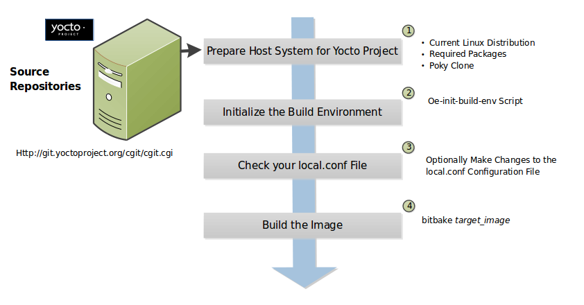

14 Building
This section describes various build procedures, such as the steps needed for a simple build, building a target for multiple configurations, generating an image for more than one machine, and so forth.
14.1 Building a Simple Image
In the development environment, you need to build an image whenever you change hardware support, add or change system libraries, or add or change services that have dependencies. There are several methods that allow you to build an image within the Yocto Project. This section presents the basic steps you need to build a simple image using BitBake from a build host running Linux.
Nota
For information on how to build an image using Toaster, see the Manuale Utente di Toaster.
For information on how to use
devtoolto build images, see the "Using devtool in Your SDK Workflow" section in the Yocto Project Application Development and the Extensible Software Development Kit (eSDK) manual.For a quick example on how to build an image using the OpenEmbedded build system, see the Build Rapida di un'Immagine con lo Yocto Project document.
You can also use the Yocto Project BitBake extension for Visual Studio Code to build images.
The build process creates an entire Linux distribution from source and
places it in your Build Directory under tmp/deploy/images. For
detailed information on the build process using BitBake, see the
"Immagini" section in the Yocto Project Overview
and Concepts Manual.
The following figure and list overviews the build process:


Set up Your Host Development System to Support Development Using the Yocto Project: See the "Setting Up to Use the Yocto Project" section for options on how to get a build host ready to use the Yocto Project.
Make Sure Your Configuration is Correct: Use bitbake-config-build to define the MACHINE or DISTRO, and open your build/conf/site.conf file to set site-specific settings.
Build the Image: Build the image using the
bitbakecommand:$ bitbake target
Nota
For information on BitBake, see the BitBake User Manual.
The target is the name of the recipe you want to build. Common targets are the images in
meta/recipes-core/images,meta/recipes-sato/images, and so forth all found in OpenEmbedded-Core (OE-Core). Alternatively, the target can be the name of a recipe for a specific piece of software such as BusyBox. For more details about the images the OpenEmbedded build system supports, see the "Immagini" chapter in the Yocto Project Reference Manual.As an example, the following command builds the
core-image-minimalimage:$ bitbake core-image-minimal
Once an image has been built, it often needs to be installed. The images and kernels built by the OpenEmbedded build system are placed in the Build Directory in
tmp/deploy/images. For information on how to run pre-built images such asqemux86andqemuarm, see the Manuale di Sviluppo di Applicazioni Yocto Project e Software Development Kit (SDK/eSDK) manual. For information about how to install these images, see the documentation for your particular board or machine.
14.2 Building Images for Multiple Targets Using Multiple Configurations
See the Building Images for Multiple Targets With Multiconfig section of the Yocto Project Development Tasks Manual.
14.3 Building an Initial RAM Filesystem (Initramfs) Image
An initial RAM filesystem (Initramfs) image provides a temporary root filesystem used for early system initialization, typically providing tools and loading modules needed to locate and mount the final root filesystem.
Follow these steps to create an Initramfs image:
Create the Initramfs Image Recipe: You can reference the
core-image-minimal-initramfs.bbrecipe found in themeta/recipes-coredirectory in OpenEmbedded-Core (OE-Core) as an example from which to work. Thecore-image-minimal-initramfsrecipe is based on the initramfs-framework recipe described below.Decide if You Need to Bundle the Initramfs Image Into the Kernel Image: If you want the Initramfs image that is built to be bundled in with the kernel image, set the INITRAMFS_IMAGE_BUNDLE variable to
"1"in a configuration file, such as a machine configuration file, and set the INITRAMFS_IMAGE variable in the recipe that builds the kernel image.Setting the INITRAMFS_IMAGE_BUNDLE flag causes the Initramfs image to be unpacked into the
${B}/usr/directory. The unpacked Initramfs image is then passed to the kernel'sMakefileusing the CONFIG_INITRAMFS_SOURCE variable, allowing the Initramfs image to be built into the kernel normally.Optionally Add Items to the Initramfs Image Through the Initramfs Image Recipe: If you add items to the Initramfs image by way of its recipe, you should use PACKAGE_INSTALL rather than IMAGE_INSTALL. PACKAGE_INSTALL gives more direct control of what is added to the image as compared to the defaults you might not necessarily want that are set by the image or core-image classes.
Build the Kernel Image and the Initramfs Image: Build your kernel image using BitBake. Because the Initramfs image recipe is a dependency of the kernel image, the Initramfs image is built as well and bundled with the kernel image if you used the INITRAMFS_IMAGE_BUNDLE variable described earlier.
14.3.1 Customizing an Initramfs using initramfs-framework
The core-image-minimal-initramfs.bb recipe found in
meta/recipes-core/images uses the
initramfs-framework_1.0.bb
recipe as its base component. The goal of the initramfs-framework recipe is
to provide the building blocks to build a customized Initramfs.
The initramfs-framework recipe relies on shell initialization scripts
defined in meta/recipes-core/initrdscripts/initramfs-framework. Since some of
these scripts do not apply for all use cases, the initramfs-framework recipe
defines different packages:
initramfs-framework-base: this package installs the basic components of an Initramfs, such as theinitscript or the/dev/consolecharacter special file. As this package is a runtime dependency of all modules listed below, it is automatically pulled in when one of the modules is installed in the image.initramfs-module-exec: support for execution of applications.initramfs-module-mdev: support for mdev.initramfs-module-udev: support for Udev.initramfs-module-e2fs: support for ext4/ext3/ext2 filesystems.initramfs-module-nfsrootfs: support for locating and mounting the root partition via NFS.initramfs-module-rootfs: support for locating and mounting the root partition.initramfs-module-debug: dynamic debug support.initramfs-module-lvm: LVM rootfs support.initramfs-module-overlayroot: support for mounting a read-write overlay on top of a read-only root filesystem.
In addition to the packages defined by the initramfs-framework recipe
itself, the following packages are defined by the recipes present in
meta/recipes-core/initrdscripts:
initramfs-module-install: module to create and install a partition layout on a selected block device.initramfs-module-install-efi: module to create and install an EFI partition layout on a selected block device.initramfs-module-setup-live: module to start a shell in the Initramfs ifroot=/dev/ram0in passed in the Kernel command-line or theroot=parameter was not passed.
To customize the Initramfs, you can add or remove packages listed
earlier from the PACKAGE_INSTALL variable with a bbappend on the
core-image-minimal-initramfs recipe, or create a custom recipe for the
Initramfs taking core-image-minimal-initramfs as example.
Custom scripts can be added to the Initramfs by writing your own
recipes. The recipes are conventionally named initramfs-module-<module name>
where <module name> is the name of the module. The recipe should set its
RDEPENDS package-specific variables to include
initramfs-framework-base and the other packages on which the module depends
at runtime.
The recipe must install shell initialization scripts in ${D}/init.d and must follow the <number>-<script name> naming scheme where:
<number>is a two-digit number that affects the execution order of the script compared to others. For example, the script80-setup-livewould be executed after01-udevbecause 80 is greater than 01.This number being two-digits is important here as the scripts are executed alphabetically. For example, the script
10-scriptwould be executed before the script8-script, because1is inferior to8. Therefore, the script should be named08-script.<script name>is the script name which you can choose freely.If two script use the same
<number>, they are sorted alphabetically based on<script name>.
14.3.2 Bundling an Initramfs Image From a Separate Multiconfig
There may be a case where we want to build an Initramfs image which does not
inherit the same distro policy as our main image, for example, we may want
our main image to use TCLIBC = "glibc", but to use TCLIBC = "musl" in our Initramfs
image to keep a smaller footprint. However, by performing the steps mentioned
above the Initramfs image will inherit TCLIBC = "glibc" without allowing us
to override it.
To achieve this, you need to perform some additional steps:
Create a multiconfig for your Initramfs image: You can perform the steps on "Building Images for Multiple Targets Using Multiple Configurations" to create a separate multiconfig. For the sake of simplicity let's assume such multiconfig is called:
initramfscfg.confand contains the variables:TMPDIR = "${TOPDIR}/tmp-initramfscfg" TCLIBC = "musl"
Set additional Initramfs variables on your main configuration: Additionally, in your configuration file you need to set the variables:
INITRAMFS_MULTICONFIG = "initramfscfg" INITRAMFS_DEPLOY_DIR_IMAGE = "${TOPDIR}/tmp-initramfscfg/deploy/images/${MACHINE}"
The variables INITRAMFS_MULTICONFIG and INITRAMFS_DEPLOY_DIR_IMAGE are used to create a multiconfig dependency from the kernel to the INITRAMFS_IMAGE to be built coming from the
initramfscfgmulticonfig, and to let the buildsystem know where the INITRAMFS_IMAGE will be located.Building a system with such configuration will build the kernel using the main configuration but the do_bundle_initramfs task will grab the selected INITRAMFS_IMAGE from INITRAMFS_DEPLOY_DIR_IMAGE instead, resulting in a musl based Initramfs image bundled in the kernel but a glibc based main image.
The same is applicable to avoid inheriting DISTRO_FEATURES on INITRAMFS_IMAGE or to build a different DISTRO for it such as
poky-tiny.
14.4 Building a Tiny System
Very small distributions have some significant advantages such as requiring less on-die or in-package memory (cheaper), better performance through efficient cache usage, lower power requirements due to less memory, faster boot times, and reduced development overhead. Some real-world examples where a very small distribution gives you distinct advantages are digital cameras, medical devices, and small headless systems.
This section presents information that shows you how you can trim your
distribution to even smaller sizes than the poky-tiny distribution,
which is around 5 Mbytes, that can be built out-of-the-box using the
Yocto Project.
14.4.1 Tiny System Overview
The following list presents the overall steps you need to consider and perform to create distributions with smaller root filesystems, achieve faster boot times, maintain your critical functionality, and avoid initial RAM disks:
14.4.2 Goals and Guiding Principles
Before you can reach your destination, you need to know where you are going. Here is an example list that you can use as a guide when creating very small distributions:
Determine how much space you need (e.g. a kernel that is 1 Mbyte or less and a root filesystem that is 3 Mbytes or less).
Find the areas that are currently taking 90% of the space and concentrate on reducing those areas.
Do not create any difficult "hacks" to achieve your goals.
Leverage the device-specific options.
Work in a separate layer so that you keep changes isolated. For information on how to create layers, see the "Comprendere e Creare i Layer" section.
14.4.3 Understand What Contributes to Your Image Size
It is easiest to have something to start with when creating your own
distribution. You can use the Yocto Project out-of-the-box to create the
poky-tiny distribution. Ultimately, you will want to make changes in
your own distribution that are likely modeled after poky-tiny.
Nota
To use poky-tiny in your build, set the
distro/ fragment to "poky-tiny" as described in the
bitbake-config-build enable-fragment section, or set the
DISTRO variable to "poky-tiny" in the
build/conf/local.conf file.
Understanding some memory concepts will help you reduce the system size.
Memory consists of static, dynamic, and temporary memory. Static memory
is the TEXT (code), DATA (initialized data in the code), and BSS
(uninitialized data) sections. Dynamic memory represents memory that is
allocated at runtime: stacks, hash tables, and so forth. Temporary
memory is recovered after the boot process. This memory consists of
memory used for decompressing the kernel and for the __init__
functions.
To help you see where you currently are with kernel and root filesystem
sizes, you can use two tools found in OpenEmbedded-Core (OE-Core)
in the scripts/tiny/ directory:
ksize.py: Reports component sizes for the kernel build objects.dirsize.py: Reports component sizes for the root filesystem.
This next tool and command help you organize configuration fragments and view file dependencies in a human-readable form:
merge_config.sh: Helps you manage configuration files and fragments within the kernel. With this tool, you can merge individual configuration fragments together. The tool allows you to make overrides and warns you of any missing configuration options. The tool is ideal for allowing you to iterate on configurations, create minimal configurations, and create configuration files for different machines without having to duplicate your process.The
merge_config.shscript is part of the Linux Yocto kernel Git repositories (i.e.linux-yocto-3.14,linux-yocto-3.10,linux-yocto-3.8, and so forth) in thescripts/kconfigdirectory.For more information on configuration fragments, see the "Creating Configuration Fragments" section in the Yocto Project Linux Kernel Development Manual.
bitbake -u taskexp -g bitbake_target: Using the BitBake command with these options brings up a Dependency Explorer from which you can view file dependencies. Understanding these dependencies allows you to make informed decisions when cutting out various pieces of the kernel and root filesystem.
14.4.4 Trim the Root Filesystem
The root filesystem is made up of packages for booting, libraries, and applications. To change things, you can configure how the packaging happens, which changes the way you build them. You can also modify the filesystem itself or select a different filesystem.
First, find out what is hogging your root filesystem by running the
dirsize.py script from your root directory:
$ cd root-directory-of-image
$ dirsize.py 100000 > dirsize-100k.log
$ cat dirsize-100k.log
You can apply a filter to the script to ignore files under a certain size. The previous example filters out any files below 100 Kbytes. The sizes reported by the tool are uncompressed, and thus will be smaller by a relatively constant factor in a compressed root filesystem. When you examine your log file, you can focus on areas of the root filesystem that take up large amounts of memory.
You need to be sure that what you eliminate does not cripple the functionality you need. One way to see how packages relate to each other is by using the Dependency Explorer UI with the BitBake command:
$ cd image-directory
$ bitbake -u taskexp -g image
Use the interface to select potential packages you wish to eliminate and see their dependency relationships.
When deciding how to reduce the size, get rid of packages that result in
minimal impact on the feature set. For example, you might not need a VGA
display. Or, you might be able to get by with devtmpfs and mdev
instead of udev.
Use your distro configuration file to make such changes. For example, to
eliminate udev and glib, set the following:
VIRTUAL-RUNTIME_dev_manager = ""
Finally, you should consider exactly the type of root filesystem you
need to meet your needs while also reducing its size. For example,
consider cramfs, squashfs, ubifs, ext2, or an
Initramfs using initramfs. Be aware that ext3 requires a 1
Mbyte journal. If you are okay with running read-only, you do not need
this journal.
Nota
After each round of elimination, you need to rebuild your system and then use the tools to see the effects of your reductions.
14.4.5 Trim the Kernel
The kernel is built by including policies for hardware-independent aspects. What subsystems do you enable? For what architecture are you building? Which drivers do you build by default?
Nota
You can modify the kernel source if you want to help with boot time.
Run the ksize.py script from the top-level Linux build directory to
get an idea of what is making up the kernel:
$ cd top-level-linux-build-directory
$ ksize.py > ksize.log
$ cat ksize.log
When you examine the log, you will see how much space is taken up with
the built-in .o files for drivers, networking, core kernel files,
filesystem, sound, and so forth. The sizes reported by the tool are
uncompressed, and thus will be smaller by a relatively constant factor
in a compressed kernel image. Look to reduce the areas that are large
and taking up around the "90% rule."
To examine, or drill down, into any particular area, use the -d
option with the script:
$ ksize.py -d > ksize.log
Using this option breaks out the individual file information for each area of the kernel (e.g. drivers, networking, and so forth).
Use your log file to see what you can eliminate from the kernel based on features you can let go. For example, if you are not going to need sound, you do not need any drivers that support sound.
After figuring out what to eliminate, you need to reconfigure the kernel
to reflect those changes during the next build. You could run
menuconfig and make all your changes at once. However, that makes it
difficult to see the effects of your individual eliminations and also
makes it difficult to replicate the changes for perhaps another target
device. A better method is to start with no configurations using
allnoconfig, create configuration fragments for individual changes,
and then manage the fragments into a single configuration file using
merge_config.sh. The tool makes it easy for you to iterate using the
configuration change and build cycle.
Each time you make configuration changes, you need to rebuild the kernel and check to see what impact your changes had on the overall size.
14.4.6 Remove Package Management Requirements
Packaging requirements add size to the image. One way to reduce the size of the image is to remove all the packaging requirements from the image. This reduction includes both removing the package manager and its unique dependencies as well as removing the package management data itself.
To eliminate all the packaging requirements for an image, be sure that "package-management" is not part of your IMAGE_FEATURES statement for the image. When you remove this feature, you are removing the package manager as well as its dependencies from the root filesystem.
14.4.7 Look for Other Ways to Minimize Size
Depending on your particular circumstances, other areas that you can trim likely exist. The key to finding these areas is through tools and methods described here combined with experimentation and iteration. Here are a couple of areas to experiment with:
glibc: In general, follow this process:Remove
glibcfeatures from DISTRO_FEATURES that you think you do not need.Build your distribution.
If the build fails due to missing symbols in a package, determine if you can reconfigure the package to not need those features. For example, change the configuration to not support wide character support as is done for
ncurses. Or, if support for those characters is needed, determine whatglibcfeatures provide the support and restore the configuration.
Rebuild and repeat the process.
busybox: For BusyBox, use a process similar as described forglibc. A difference is you will need to boot the resulting system to see if you are able to do everything you expect from the running system. You need to be sure to integrate configuration fragments into Busybox because BusyBox handles its own core features and then allows you to add configuration fragments on top.
14.4.8 Iterate on the Process
If you have not reached your goals on system size, you need to iterate on the process. The process is the same. Use the tools and see just what is taking up 90% of the root filesystem and the kernel. Decide what you can eliminate without limiting your device beyond what you need.
Depending on your system, a good place to look might be Busybox, which provides a stripped down version of Unix tools in a single, executable file. You might be able to drop virtual terminal services or perhaps ipv6.
14.5 Building Images for More than One Machine
A common scenario developers face is creating images for several different machines that use the same software environment. In this situation, it is tempting to set the tunings and optimization flags for each build specifically for the targeted hardware (i.e. "maxing out" the tunings). Doing so can considerably add to build times and package feed maintenance collectively for the machines. For example, selecting tunes that are extremely specific to a CPU core used in a system might enable some micro optimizations in GCC for that particular system but would otherwise not gain you much of a performance difference across the other systems as compared to using a more general tuning across all the builds (e.g. setting DEFAULTTUNE specifically for each machine's build). Rather than "max out" each build's tunings, you can take steps that cause the OpenEmbedded build system to reuse software across the various machines where it makes sense.
If build speed and package feed maintenance are considerations, you should consider the points in this section that can help you optimize your tunings to best consider build times and package feed maintenance.
Share the Build Directory : If at all possible, share the TMPDIR across builds. The Yocto Project supports switching between different MACHINE values in the same TMPDIR. This practice is well supported and regularly used by developers when building for multiple machines. When you use the same TMPDIR for multiple machine builds, the OpenEmbedded build system can reuse the existing native and often cross-recipes for multiple machines. Thus, build time decreases.
Enable the Appropriate Package Architecture: By default, the OpenEmbedded build system enables three levels of package architectures: "all", "tune" or "package", and "machine". Any given recipe usually selects one of these package architectures (types) for its output. Depending for what a given recipe creates packages, making sure you enable the appropriate package architecture can directly impact the build time.
A recipe that just generates scripts can enable "all" architecture because there are no binaries to build. To specifically enable "all" architecture, be sure your recipe inherits the allarch class. This class is useful for "all" architectures because it configures many variables so packages can be used across multiple architectures.
If your recipe needs to generate packages that are machine-specific or when one of the build or runtime dependencies is already machine-architecture dependent, which makes your recipe also machine-architecture dependent, make sure your recipe enables the "machine" package architecture through the MACHINE_ARCH variable:
PACKAGE_ARCH = "${MACHINE_ARCH}"
When you do not specifically enable a package architecture through the PACKAGE_ARCH, The OpenEmbedded build system defaults to the TUNE_PKGARCH setting:
PACKAGE_ARCH = "${TUNE_PKGARCH}"
Choose a Generic Tuning File if Possible: Some tunes are more generic and can run on multiple targets (e.g. an
armv5set of packages could run onarmv6andarmv7processors in most cases). Similarly,i486binaries could work oni586and higher processors. You should realize, however, that advances on newer processor versions would not be used.If you select the same tune for several different machines, the OpenEmbedded build system reuses software previously built, thus speeding up the overall build time. Realize that even though a new sysroot for each machine is generated, the software is not recompiled and only one package feed exists.
Manage Granular Level Packaging: Sometimes there are cases where injecting another level of package architecture beyond the three higher levels noted earlier can be useful. For example, consider how NXP (formerly Freescale) allows for the easy reuse of binary packages in their layer meta-freescale. In this example, the fsl-dynamic-packagearch class shares GPU packages for i.MX53 boards because all boards share the AMD GPU. The i.MX6-based boards can do the same because all boards share the Vivante GPU. This class inspects the BitBake datastore to identify if the package provides or depends on one of the sub-architecture values. If so, the class sets the PACKAGE_ARCH value based on the
MACHINE_SUBARCHvalue. If the package does not provide or depend on one of the sub-architecture values but it matches a value in the machine-specific filter, it sets MACHINE_ARCH. This behavior reduces the number of packages built and saves build time by reusing binaries.Use Tools to Debug Issues: Sometimes you can run into situations where software is being rebuilt when you think it should not be. For example, the OpenEmbedded build system might not be using shared state between machines when you think it should be. These types of situations are usually due to references to machine-specific variables such as MACHINE, SERIAL_CONSOLES, XSERVER, MACHINE_FEATURES, and so forth in code that is supposed to only be tune-specific or when the recipe depends (DEPENDS, RDEPENDS, RRECOMMENDS, RSUGGESTS, and so forth) on some other recipe that already has PACKAGE_ARCH defined as "${MACHINE_ARCH}".
Nota
Patches to fix any issues identified are most welcome as these issues occasionally do occur.
For such cases, you can use some tools to help you sort out the situation:
state-diff-machines.sh``*:* You can find this tool in the ``scriptsdirectory of the Source Repositories. See the comments in the script for information on how to use the tool.BitBake's "-S printdiff" Option: Using this option causes BitBake to try to establish the most recent signature match (e.g. in the shared state cache) and then compare matched signatures to determine the stamps and delta where these two stamp trees diverge.
14.6 Building Software from an External Source
By default, the OpenEmbedded build system uses the Build Directory when building source code. The build process involves fetching the source files, unpacking them, and then patching them if necessary before the build takes place.
There are situations where you might want to build software from source files that are external to and thus outside of the OpenEmbedded build system. For example, suppose you have a project that includes a new BSP with a heavily customized kernel. And, you want to minimize exposing the build system to the development team so that they can focus on their project and maintain everyone's workflow as much as possible. In this case, you want a kernel source directory on the development machine where the development occurs. You want the recipe's SRC_URI variable to point to the external directory and use it as is, not copy it.
To build from software that comes from an external source, all you need to do is inherit the externalsrc class and then set the EXTERNALSRC variable to point to your external source code. Here are the statements to put in your build/conf/local.conf file:
INHERIT += "externalsrc"
EXTERNALSRC:pn-myrecipe = "path-to-your-source-tree"
This next example shows how to accomplish the same thing by setting EXTERNALSRC in the recipe itself or in the recipe's append file:
EXTERNALSRC = "path"
EXTERNALSRC_BUILD = "path"
Nota
In order for these settings to take effect, you must globally or locally inherit the externalsrc class.
By default, externalsrc builds the source code in a directory separate from the external source directory as specified by EXTERNALSRC. If you need to have the source built in the same directory in which it resides, or some other nominated directory, you can set EXTERNALSRC_BUILD to point to that directory:
EXTERNALSRC_BUILD:pn-myrecipe = "path-to-your-source-tree"
Nota
The values of EXTERNALSRC and EXTERNALSRC_BUILD must be absolute paths.
14.7 Replicating a Build Offline
It can be useful to take a "snapshot" of upstream sources used in a build and then use that "snapshot" later to replicate the build offline. To do so, you need to first prepare and populate your downloads directory with your "snapshot" of files. Once your downloads directory is ready, you can use it at any time and from any machine to replicate your build.
Follow these steps to populate your Downloads directory:
Create a Clean Downloads Directory: Start with an empty downloads directory (DL_DIR). You start with an empty downloads directory by either removing the files in the existing directory or by setting DL_DIR to point to either an empty location or one that does not yet exist.
Generate Tarballs of the Source Git Repositories: Edit your build/conf/local.conf configuration file as follows:
DL_DIR = "/home/your-download-dir/" BB_GENERATE_MIRROR_TARBALLS = "1"
During the fetch process in the next step, BitBake gathers the source files and creates tarballs in the directory pointed to by DL_DIR. See the BB_GENERATE_MIRROR_TARBALLS variable for more information.
Populate Your Downloads Directory Without Building: Use BitBake to fetch your sources but inhibit the build:
$ bitbake target --runall=fetch
The downloads directory (i.e.
${DL_DIR}) now has a "snapshot" of the source files in the form of tarballs, which can be used for the build.Optionally Remove Any Git or other SCM Subdirectories From the Downloads Directory: If you want, you can clean up your downloads directory by removing any Git or other Source Control Management (SCM) subdirectories such as
${DL_DIR}/git2/*. The tarballs already contain these subdirectories.
Once your downloads directory has everything it needs regarding source files, you can create your "own-mirror" and build your target. Understand that you can use the files to build the target offline from any machine and at any time.
Follow these steps to build your target using the files in the downloads directory:
Using Local Files Only: Inside your build/conf/local.conf or distro configuration file, add the SOURCE_MIRROR_URL variable, inherit the own-mirrors class, and add the BB_NO_NETWORK variable:
SOURCE_MIRROR_URL ?= "file:///home/your-download-dir/" INHERIT += "own-mirrors" BB_NO_NETWORK = "1"
The SOURCE_MIRROR_URL and own-mirrors class set up the system to use the downloads directory as your "own mirror". Using the BB_NO_NETWORK variable makes sure that BitBake's fetching process in step 3 stays local, which means files from your "own-mirror" are used.
Start With a Clean Build: You can start with a clean build by removing the
${TMPDIR}directory or using a new Build Directory.Build Your Target: Use BitBake to build your target:
$ bitbake target
The build completes using the known local "snapshot" of source files from your mirror. The resulting tarballs for your "snapshot" of source files are in the downloads directory.
Nota
The offline build does not work if recipes attempt to find the latest version of software by setting SRCREV to
${AUTOREV}:SRCREV = "${AUTOREV}"
When a recipe sets SRCREV to
${AUTOREV}, the build system accesses the network in an attempt to determine the latest version of software from the SCM. Typically, recipes that use AUTOREV are custom or modified recipes. Recipes that reside in public repositories usually do not use AUTOREV.If you do have recipes that use AUTOREV, you can take steps to still use the recipes in an offline build. Do the following:
Use a configuration generated by enabling build history.
Use the
buildhistory-collect-srcrevscommand to collect the stored SRCREV values from the build's history. For more information on collecting these values, see the "Build History Package Information" section.Once you have the correct source revisions, you can modify those recipes to set SRCREV to specific versions of the software.